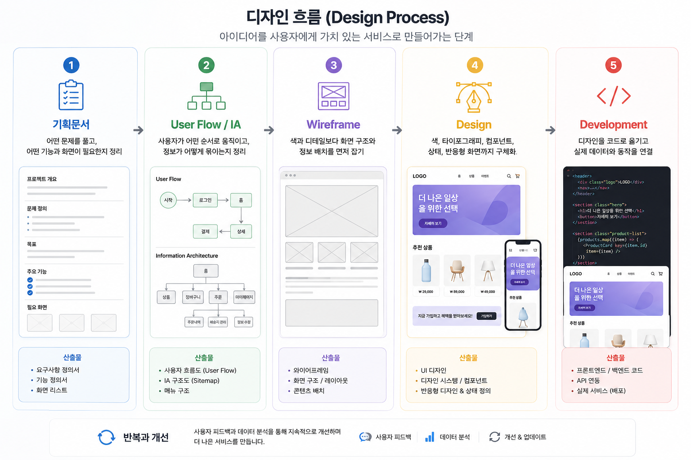
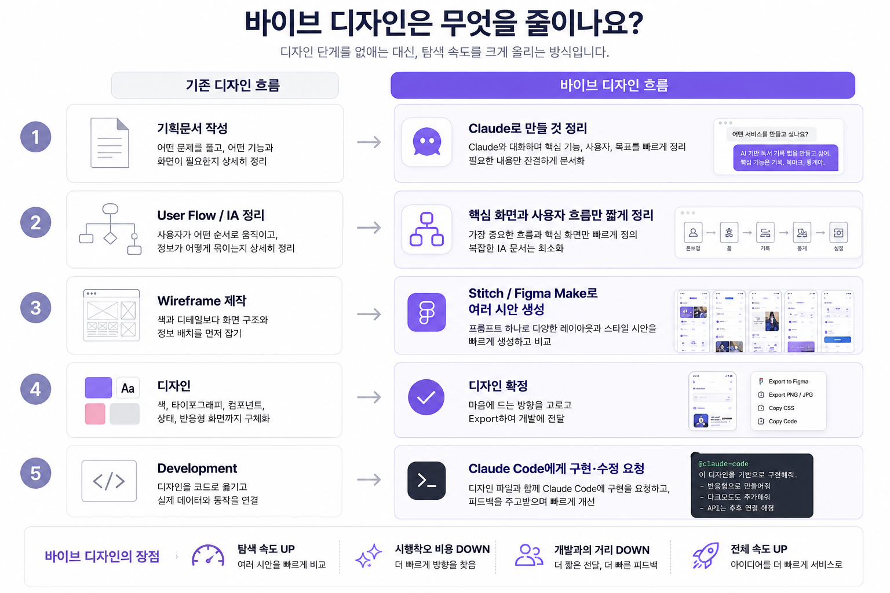
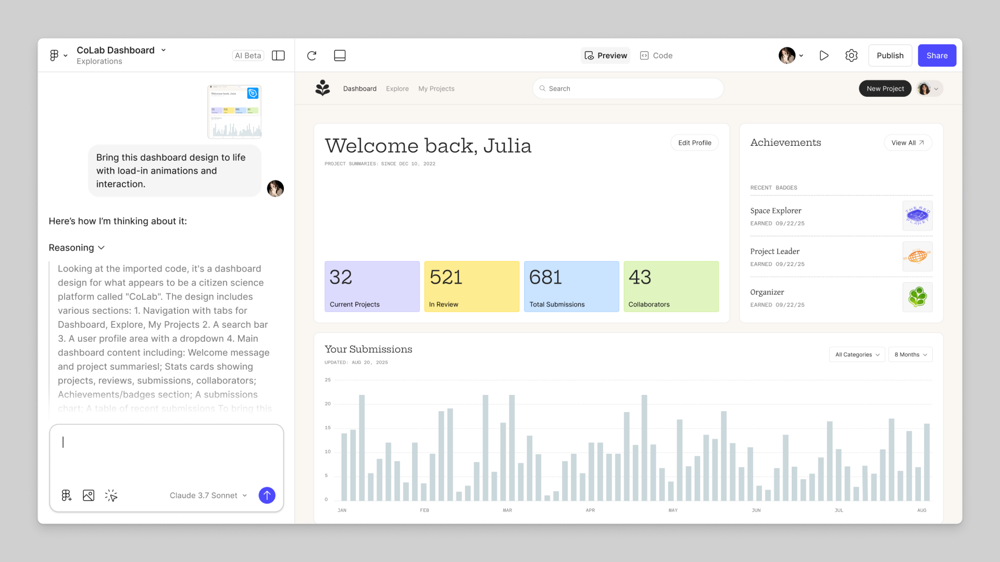
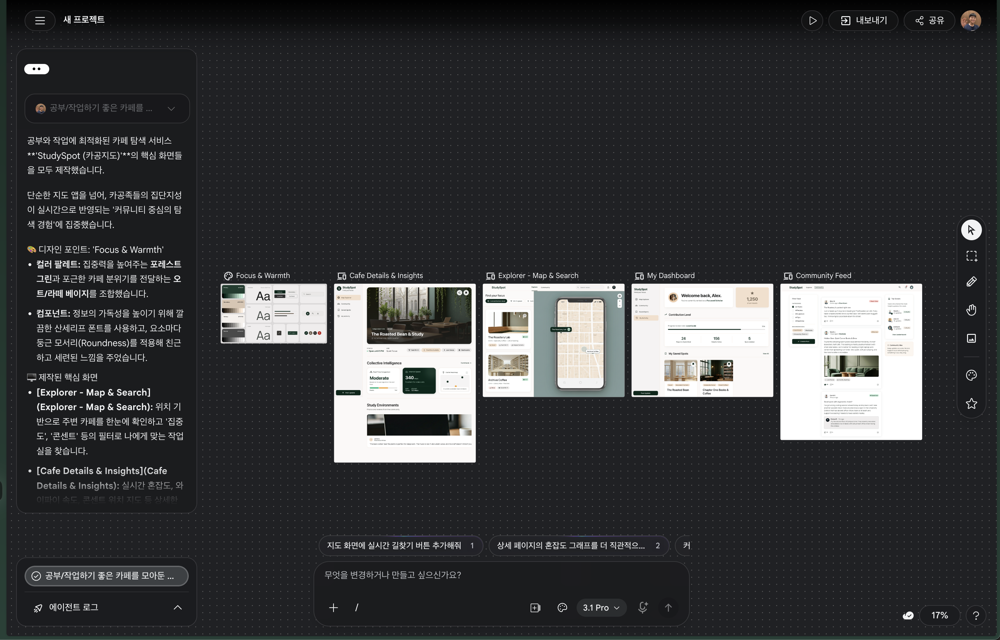

디자인 개선하기
바이브 디자인으로 방향 잡기
AI로 화면 시안을 빠르게 뽑고 Claude Code로 구현 요청하는 흐름을 봅니다.
얻어갈 것
- 기존 디자인 프로세스와 바이브 디자인 프로세스의 차이를 구분합니다.
- 기획서, Stitch/Figma Make 시안, Claude Code 구현 요청이 어떻게 이어지는지 봅니다.
- Shadcn 컴포넌트로 바로 조립하는 선택지도 함께 봅니다.
원래 디자인은 어떤 순서로 가나요
보통 제품 디자인은 아래 순서로 진행됩니다.

| 단계 | 하는 일 |
|---|---|
| 기획문서 | 어떤 문제를 풀고, 어떤 기능과 화면이 필요한지 정리 |
| User Flow / IA | 사용자가 어떤 순서로 움직이고, 정보가 어떻게 묶이는지 정리 |
| Wireframe | 색과 디테일보다 화면 구조와 정보 배치를 먼저 잡기 |
| Design | 색, 타이포그래피, 컴포넌트, 상태, 반응형 화면까지 구체화 |
| Development | 디자인을 코드로 옮기고 실제 데이터와 동작을 연결 |
이 흐름은 팀 작업에서는 여전히 중요합니다. 다만 혼자 MVP를 빠르게 만들 때는 모든 산출물을 무겁게 만들기보다, AI가 이해할 만큼만 압축해서 넘기는 편이 현실적입니다.
바이브 디자인은 무엇을 줄이나요
바이브 디자인은 디자인 단계를 없애는 게 아니라, 탐색 속도를 크게 올리는 방식입니다.

| 기존 흐름 | 바이브 디자인 흐름 |
|---|---|
| 기획문서 작성 | Claude로 만들 것 정리 |
| User Flow / IA 정리 | 핵심 화면과 사용자 흐름만 짧게 정리 |
| Wireframe 제작 | Stitch/Figma Make로 여러 시안 생성 |
| 디자인 확정 | 마음에 드는 방향을 고르고 Export 하기 |
| 개발 전달 | Claude Code에게 구현·수정 요청 |
핵심은 “느낌”만 던지는 게 아닙니다. 먼저 만들 것을 짧은 기획서로 정리하고, 그 내용을 디자인 생성 도구에 넣어 화면 후보를 빠르게 뽑는 것입니다.
1. 만들 것을 기획서로 정리하기
먼저 Claude에게 만들 서비스를 짧은 기획서로 정리하게 합니다.
공부하거나 작업하기 좋은 카페를 찾는 웹 서비스를 만들고 싶어. 디자인 생성 도구에 넣을 수 있게 짧은 기획서로 정리해줘. - 서비스가 풀 문제 - 핵심 사용자 - 필요한 주요 화면 3-5개 - 각 화면에 들어갈 정보 - 전체 디자인 분위기
여기서 바로 “예쁘게 만들어줘”로 가지 않는 게 좋습니다. 어떤 화면이 필요한지 먼저 정리해야 Stitch나 Figma Make가 엉뚱한 화면을 덜 만듭니다.
2. Stitch나 Figma Make로 시안 뽑기
정리한 기획서를 Stitch나 Figma Make에 넣고 여러 방향의 화면을 뽑습니다.
레퍼런스가 있다면 이 단계에서 같이 넣습니다. 마음에 드는 서비스의 스크린샷이나 링크를 2-3개 모아두면 색감, 화면 밀도, 카드 모양을 더 빨리 맞출 수 있습니다.
레퍼런스는 Awwwards UI Design, UI Bowl, Mobbin 같은 사이트에서 찾아볼 수 있습니다.
| 도구 | 잘 맞는 경우 |
|---|---|
| Figma Make | 팀 단위 디자인 협업이 많거나, PRD 기반 시안을 빠르게 만들고 싶은 경우 |
| Google Stitch | 디자인 리소스가 부족한 개발자 팀이 HTML/CSS 코드까지 빠르게 실험하고 싶은 경우 |


- 한 번에 정답을 찾기보다 2-3개 방향을 비교합니다.
- 마음에 드는 화면에서 색감, 카드 밀도, 버튼 모양, 정보 배치를 봅니다.
- 어색한 부분은 “지도 화면을 더 크게”, “상세 화면에 예약 버튼 강조”처럼 다시 요청합니다.
3. Claude Code에게 구현 요청하기
시안이 마음에 들면 그 다음에 구현을 요청하면 됩니다. 이미 export한 .zip, Figma 링크, 스크린샷이 있다면 같이 첨부합니다.
| 시안 출처 | Claude Code에게 넘기는 방법 |
|---|---|
| Figma | Figma MCP를 연결해두고 특정 Figma 링크를 주면, Claude Code가 해당 화면을 읽고 구현 작업을 이어갈 수 있습니다. |
| Stitch | 뒤에서 다룰 DESIGN.md 기준과 함께 스크린샷, export한 HTML/CSS, 필요한 태그 조각을 넘겨 작업을 요청합니다. |
옵션: Shadcn으로 바로 조립하기
- Figma Make나 Stitch는 화면 후보를 빠르게 뽑는 도구에 가깝습니다. Shadcn은 조금 다릅니다. 이미 코드로 구현된 UI 컴포넌트를 제공해주는 디자인 시스템입니다.
- Shadcn은 완성된 디자인 시안을 대신 만들어주는 도구라기보다, 재사용 가능한 컴포넌트들을 활용할 수 있도록 도와줍니다.
- 대시보드, 설정 화면, 관리자 화면처럼 익숙한 UI를 빠르게 만들고 싶을 때 활용하면 좋습니다.
마무리
바이브 디자인은 방향을 찾는 데 좋습니다. 문제는 다음 화면을 만들 때입니다.
- 첫 화면은 마음에 드는데 다음 화면의 버튼 색이 달라질 수 있습니다.
- 여백, 폰트 크기가 화면마다 조금씩 흔들릴 수 있습니다.
- 마음에 든 시안의 기준을 매번 말로 다시 설명해야 할 수 있습니다.
그래서 마음에 드는 방향을 찾은 뒤에는 그 기준을 잡는 디자인 시스템이 필요합니다. 다음 레슨에서는 디자인 시스템, 토큰, 컴포넌트 기준을 DESIGN.md로 고정하는 흐름을 봅니다.